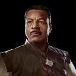
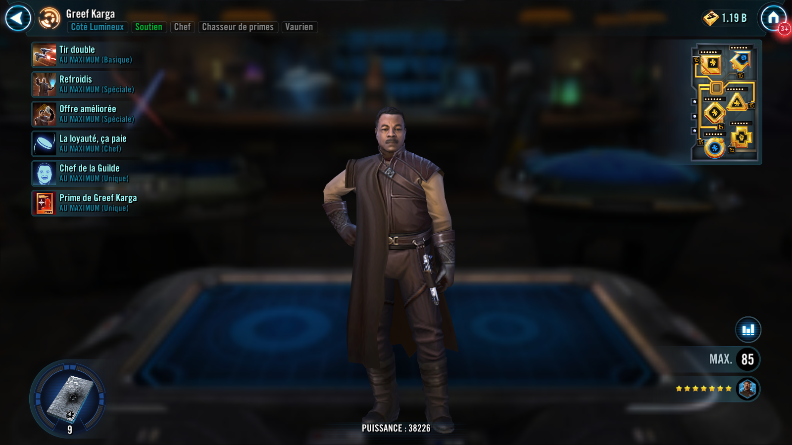
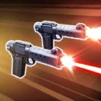
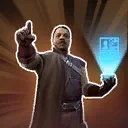
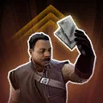
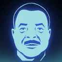

Greef Karga
Bounty Hunter Support that provides recovery and assist calls

Bounty Hunter Support that provides recovery and assist calls


Deal Physical damage to target enemy twice and inflict Daze for 2 turns. All allies with Payouts active recover 5% Health and Protection.

Dispel all buffs on target enemy, which can't be evaded. Then call all other Bounty Hunter allies to assist. Allies with Payouts active deal 30% more damage. If the enemy is defeated by this ability, Bounty Hunter allies gain Offense Up, Defense Penetration Up, Critical Damage Up, Critical Chance Up, and Health Steal Up for 3 turns.

Dispel all debuffs on Bounty Hunter allies. All Bounty Hunter allies gain Retribution for 2 turns and recover 25% Health and Protection, doubled if they have a Payout active. Allies with Payouts active gain Tenacity Up for 2 turns and 50% Turn Meter.
Allied Bounty Hunters gain 30% Max Protection. Whenever an allied Bounty Hunter gains a buff, they recover 5% Protection. When Greef is in the Leader slot, and not the Ally slot, the following Contract is active:
Contract: Attack out of turn 20 times. (Only Bounty Hunter allies can contribute to the Contract.)
Reward: All Bounty Hunter allies have their Payouts activated and gain 20% Critical Chance and Offense.

At the start of encounter, Greef gains Stealth for 2 turns. Each time any Bounty Hunter earns their Payout, allied Bounty Hunters' cooldowns are reduced by 1 and Greef also gains the following bonuses: 10% Counter Chance, Critical Avoidance, and Max Health (stacking).

Whenever Greef receives Rewards from a Contract, he also gains the following Payout. (Contracts are granted by certain Bounty Hunter Leader Abilities.)
Payout: Greef dispels all debuffs on Bounty Hunter allies and he recovers 100% Health and Protection. Greef gains Stealth for 1 turn at the end of each of his turns. Whenever Greef becomes inflicted with a debuff, his cooldowns are reduced by 1.